点击导入
下一步
是否导入飞行数据
下一步
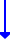
否
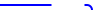
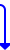
是
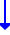
导入基础数据
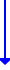
导入飞行数据
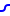
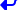
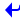
是否导入成果数据
执行导入数据
否
是
导入成果数据
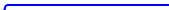
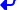
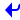
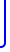
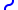
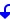
完成
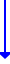
上传备份
上传成功
验证文件是否损坏
导入失败
提示：文件损坏
内存是否足够
上传失败
提示：空间不够
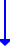
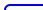
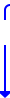
足够
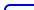
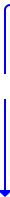
未损坏
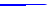
损坏
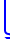
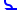
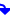
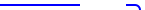
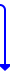
不足
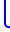
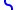
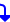
判断导入的数据版本是否一致
导入失败
提示：导入数据版本不兼容
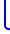
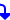
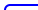
一致
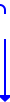
不一致
判断导入的数据版本对应的模块是否一致
提示导入成功
提示：导入数据对应模块不一致
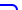
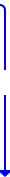
不一致
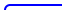
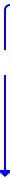
一致
系统项目数据是否存在
上传数据
提示，不支持上传
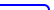
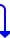
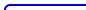
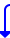
蓝色为状态判断
解压文件获取文件信息
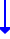
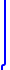
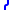
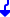
导入文件